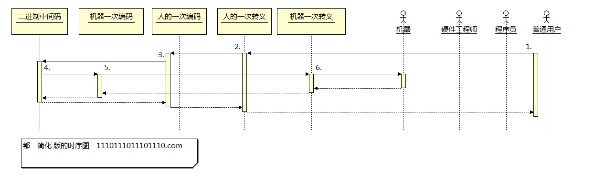

这是一组
简化
版的时序图。
纵向横向都有简化，纵向没有数据简化很正常，横向估计很人就会纳闷。
实际工程中一次转义是不够的，通常需要二次转义。
不管是用户端，还是机器端，都需要两次转义。
我们为了图像更为直观，把二次转义省略掉了。
人转义 相当于程序的源码或者命令。
机器转义 相当于可执行程序。
机器编码 相当于驱动
人的编码 相当于汇编
二进制中间码 比较特殊，我们先重点介绍这个
运行约束 运行是4的次方，如4位，16位 64位 256位。1位比较特殊，需要和256位以后一样，需要线性处理。。
移动约束 移动是对应的平方，4位，16位,64位,256位的移动。同样的，1位的移动和256位以后都需要线性处理，后面再做介绍。
4位移动一次是16位
16位移动一次是64位
64位移动一次是4096位
256位移动一次是65536位
编码
机器编码是二进制的，不太好描述，先略过。
我们直接开始讲，人的编码,编码非常复杂，并不需要完全掌握(我也没掌握，只了解皮毛)。
支持九键输入，什么意思呢？就是你只要有九个键，就能完成所有的操作。
九个键，如何完成所有的操作？答:环境,对的在运行过程中，除了常规意义上的数据之外，最主要的就是运行环境也在变化。
编码是有虚实的。如4位编码中，1111和1110共同对应一个字。再次啰嗦一句。这玩意很难，其中的妙义自己慢慢体会。
别问我为什么这么做，这么做有什么好处。我也不知道为啥要这么做，或许是因为，只有这么做才能做出来。
如4位，16位 64位 256位，都可以直接对应一个汉字，如果需要8位32位什么的，也可以对应一个汉字。
程序子父级切换
案例
12346789做为输入键，5做为控制键。注意这里的控制是只是相对的。
000 演示数据移动
111 演示代码运行
001 演示编辑代码
010 演示编辑编码
100 演示编码转换
011 演示调试代码
101 演示调试编码
110 演示子父切换